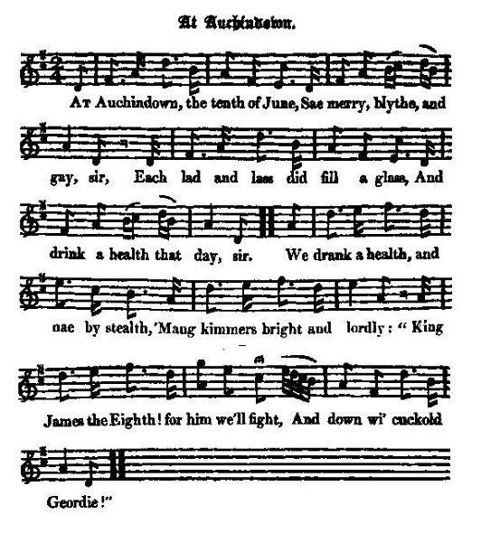

At Auchindown
The Chevalier de Saint-George's birthday
L'anniversaire du Chevalier de Saint-Georges
From the "True Loyalist", page 87 and James Hogg's "Relics" vol 1, N° 49
Tune - Mélodie"Cauld Kail in Aberdeen"
from Hogg's "Jacobite Reliques" vol.1, N°49
Sequenced by Christian Souchon

|
To the tune
Hogg states that this song "is usually sung to the celebrated old tune of "Cauld Kail in Aberdeen" . No fewer than 8 versions exist of this old song: 1° One of them appears in Herd's "Collection" (1776): It is a song on the first Earl of Aberdeen, an octogenarian widower, who died in 1720. It begins: 'Cauld kail in Aberdeen, And castocks in Strathbogie; But yet I fear they'll cook o'er soon, And never warm the cogie. The lassies about Bogie gicht, Their limbs they are sae clean and tight, That if they were but guided right They'll dance the reel o' Bogie.' 2° Another is in Joseph Dale 's (1750 - 1821) "60 favourite Scotch Songs" (1794), II, 61. 3° A third was written (between 1795 and 1798) by William Reid (1764 - 1831), the Glasgow bookseller and poet and 4° a fourth by Lady Nairne (1766 - 1845) 5° But the best of all is that by the 4th Duke of Gordon, Alexander (1743- 1827). It is a song on dancing that was printed in Johnson's Museum Vol II, song 162, page 170 (1788). The same Duke was the employer and source of encouragement to his buttler, William Marshall (1748-1833), a strathspey composer who is said (erroneously) to have written the tune of "Tullochgorum" . Gordon's song commences: In cotillons the French excel, John Bull, in country-dances, The Spaniards dance fandangoes well, Mynheer in Allemande prances; In foursome reels the Scots delight, The threesome maist dance wondrous light; But twasome ding a' out o' sight Danc'd to the reel of Bogie.' 6° Burns in his notes on the 'Museum' mentions that this song was written by the Duke of Gordon. He quotes another version, much shorter and very different, to be found in the Interleaved Museum . He states that they are "the old verses", that are not found elsewhere: Chorus My coggie, Sirs, my coggie, Sirs, I cannot want my coggie: I wadna gie my three-girr'd cap, For e'er a quean on Bogie. 1. There's cauld kail in Aberdeen, And castocks in Strathbogie, When ilka lad maun hae his lass, Then fye, gie me my coggie. 2. There's Johnie Smith has got a wife That scrimps him o' his coggie, If she were mine, upon my life I wad douk her in a bogie. 7° As to the tune, the musicologist Glen (1900) concluded after much research that the melody was not to be found in any major Scottish song collections published prior to the 'Museum' (1788, same tune as in the "Relics"). Since Allan Ramsay names a tune with the same title, as early as 1725, in "Gentle Shepherd" , as the vehicle for his song N°7, "Cauld be the rebel's cast", the tune must have been well-known at that time. 8° There is, indeed, a song in a collection of fugitive poetry in the Advocate's Library , which belonged to James Anderson, the eminent antiquary, who died in 1728. It begins: The cald kail of Aberdeen, Is warming at Strathbogie; I fear 'twill tine the heat o'er sune. And ne'er fill up the cogie.' Note: In these songs, (Strath) "Bogie" may refer to the lands of Bogygeich on the river Spey with the castle "Bog-of-Gight" that was the Scottish seat of the Dukes of Gordon, or to a tributary of the river Deveron which it joins near Huntlee in Aberdeenshire (Cf. also From Bogie Side... ). Source "The Fiddler's companion" and "Complete Songs of Robert Burns" (see Links) |
A propos de la mélodie
Hogg indique que ce chant "se chante habituellement sur l'air célèbre du "Bouillon froid d'Aberdeen" . Il n'existe pas moins de 8 versions de ce vieux chant: 1° L'une d'entre elles figure dans la "Collection" de Herd (1776). Il y est question du 1er comte d'Aberdeen, un veuf octogénaire qui voulait se remarie et qui mourut en 1720. En voici le début: 'Le bouillon froid est d'Aberdeen, De Strathbogie les radicelles. Mais s'il déborde, je vous plains: Il n'ira pas chauffer l'écuelle. A Bogiegicht, il y a des filles Proprettes et agiles. Pour peu qu'avec soin on les guide, Au reel de Bogie, elles excellent.' 2° Une autre, parmi les "60 succès écossais" (1794), II, 61 de J. Dale (1750 - 1821). 3° Une troisième fut composée (entre 1795 et 1798) par William Reid (1764 -1831), libraire et poète à Glasgow. 4° Une quatrième est due à Lady Nairne (1766 - 1845). 5° Mais la meilleure de toutes fut composée par le 4ème Duc de Gordon, Alexandre (1743 - 1827). Il y est question de danses et on le trouve publié dans le Musée de Johnson, vol. II, chant 162, page 170 (1788). Le Duc en question fut le mécène et protecteur de son majordome, William Marshall (1748-1833), célèbre compositeur de "strathpeys" à qui certains attribuent l'air "Tullochgorum" . . Cette chanson commence ainsi: La France excelle aux cotillons, John Bull plutôt aux contredanses, Les Espagnols aux fandangos, Et les "Meinherr" aux allemandes. Les Ecossais aux reels à quatre, Sont d'une grâce inouïe. A deux, à trois, qui pourrait battre L'Ecossais dansant le reel de Bogie? 6° Burns dans ses notes sur le "Musée" mentionne qu'on doit ce chant au Duc de Gordon. Il en donne une autre version bien plus courte et très différente que l'on trouve dans le " Musée interfolié" . Il indique qu'il s'agit des "vers d'origine" (qu'on ne trouve nulle part, cependant): Refrain Messieurs, mon écuelle à présent Rendez-moi, je vous prie! Je ne l'échangerais vraiment Contre la plus belle de Bogie! 1. Il y a le bouillon d'Aberdeen; Et les tiges de Strathbogie. Lorsque chacun a sa chacune. Mon écuelle me soit rendue! 2. Pauvre John Smith, c'est chichement Que ta femme emplit ton écuelle! Moi, je la plongerais dedans, Par ma foi, si c'était la mienne! 7° Quant à la mélodie, le musicologue Glen (1900) constatait, après moult recherches qu'elle ne figure dans aucun des recueils importants de musique écossaise , antérieurs à sa parution au "Musée" (1788, identique à celle de Hogg). Puisque Allan Ramsay cite une mélodie portant ce titre dès 1725 dans son "Gentle Shepherd" , comme support de son chant n° 7 "Il est froid le moule", c'est qu'elle était déjà connue à cette époque. 8° Il existe effectivement un chant dans un recueil de poésie anonyme conservé à la Bibliothèque de l'Avocat et qui appartenait à l'éminent collectionneur James Anderson qui décéda en 1728. La pièce commence ainsi: La soupe froide d'Aberdeen On la réchauffe à Strathbogie. Mon broc jamais ne sera plein, Pour peu que la chaleur s'enfuie. Note: Dans ces chansons, (Strath) "Bogie" désigne soit les terres de Bogygeich au bord de la Spey et le château "Bog-of-Gicht" qui était la résidence écossaise des Ducs de Gordon, soit un affluent de la Deveron qui la rejoint près de Huntlee en Aberdeenshire (Cf. aussi From Bogie Side... ). Source "The Fiddler's companion" et "Complete songs of Robert Burns" (cf. liens) |

|
AT AUCHINDOWN
1. At Auchindown [1], the tenth of June, [2] Sae merry, blythe, and gay, sir, Each lad and lass did fill a glass, And drink a health that day, sir. We drank a health, and no by stealth, 'Mang kimmers bright and lordly: " King James the Eighth! [3]for him we'll fight, And down wi' cuckold Geordie! [4]" (twice) 2. We took a spring, and danc'd a fling, A wow but we were vogie ! We didna fear, though we lay near The Campbells, in Stra'bogie : [5] Nor yet the loons, the black dragoons, [6] At Fochabers a-raising: If they durst come, we'd pack them home, And send them to their grazing. 3. We fear'd no harm, and no alarm, No word was spoke of dangers; We join'd the dance, and kiss'd the lance, [7] And swore us foes to strangers, To ilka name that dar'd disclaim, Our Jamie and his Charlie. [8] " King James the Eighth ! for him we'll fight, " And down the cuckold carlie!" Source: Jacobite Minstrelsy, published in Glasgow by R. Griffin & Cie and Robert Malcolm, printer in 1828. |
A SONG
To the Tune of "Old Killicranky"
1. At Auchindown, the tenth of June, How merry, blyth, and gay, sir, Each lad and lass did fill their glass, To drink a health that day, sir. We drank the KING, and all that sings, The St[uar]ts and the Gordons;: K[in]g J[ame]s the VIII. we'll for him fight, And away with cuckold G[eor]die! 2. We took a spring, and danc'd a fling, A wow but we were vogie! We did not fear, though we were near The Campbells, in Strathbogie: Nor yet the loons, the black dragoons, At Fochabers dull lazy: If they durst come, we'd chase them home, And pack them to their grasing. (3). We meant no harm, to know alarm, Nor thought of any danger; But like the bless'd, did dance and kiss, As innocent as angels, And just like those, who were dispos'd, To mirth and holy pleasure We envied none beneath the sun, Nor G[eor]ge, nor all his treasure. 4. I'll ne'er forget that happy night, My heart shall still record it; My toast shall be by land and sea, My bonny Jenny Gordon (*): When the first, I allways thirst To drink that dear sweet portion If on the last, I should be cast, By Jove! I'd drink the ocean. 5. When she does dance and cast a glance, What lively charming motions! My heart at that plays, pitty pat, And weighs a double portion: But, vow, alas! that bonny lass Is prepossess'd with notion, That none should kiss, or taste that bliss, Without the priest's devotion. 6. But I have been abraod and seen The ways of other nations, And from the Pope, indulgence got, And private toleration, To any lass that would confess To me as holy father, I'd pardon that and prove the fact To be a merit rather. Source: "The True Loyalist", page 87, 1779. |
A AUCHINDOWN
1. Auchindoun [1] vient en ce dix juin [2] De connaître un jour d'allégresse. On vit chacun, le verre en main, Porter un toast à ton adresse, A ta santé, sans se cacher, En présence des dames: "A Jacques VIII! [3] Luttons pour lui A bas Geordie, [4] l'infâme!" (bis) 2. Danse après danse et contredanse, Notre conduite fut hardie. Tous se moquaient, bien que tout près D'eux, des Campbell de Strathbogie; [5] Des dragons noirs de Fochabers [6] Sur le point de combattre. Qu'ils viennent donc, nous les ferons Regagner leurs pénates! 3. Sans se soucier d'aucun danger Que d'ailleurs personne n'évoque, Tous ceux qui dansent, baisent la lance, [7] Et prêtent serment au roi Jacques Et à Charlie [8]. Qui les honnit Prenne garde à nos lames! "A Jacques VIII! Luttons pour lui A bas Geordie, l'infâme!" (3). Fi donc des armes, des alarmes! Au danger personne ne pense. Nous, qu'on eût dit au paradis, Embrassions en toute innocence. Comme tous ceux qui sont heureux, Riant à pleine gorge, Rien n'eût de nous fait des jaloux Pas même l'or de Georges. 4. Je garde de ce jour heureux Le souvenir dans ma mémoire: Jenny Gordon (*), tout m'était bon Pour lever mon verre et pour boire. Si je commence, avec patience Alors je me rationne. Mais si le dernier toast m'échet Je bois toute la tonne! 5. Quand elle danse, que d'élégance Et que de feu dans les oeillades De ma cavalière et voilà, Mon coeur, que tu bas la chamade! Oui, mais son sein, hélas, est plein De préjugés antiques: Pas de baisers autorisés Sans un éclésiastique. 6. Oui, mais moi j'ai tant voyagé Et sais ce qu'ailleurs on en pense. Le pape m'a donné le choix Entre indulgence et la dispense. La pécheresse qui se confesse A moi, je veux l'absoudre: Et lui montrer que son péché Le Ciel plutôt l'approuve. (Trad. Christian Souchon (c) 2011) |
|
[1]
Auchindown
, mentioned in
The Haughs of Cromdale
, lies 20 miles away from Cromdale, where the Clans were defeated, though this song asserts that they wan there a battle.
[2] Tenth of June : birthday of James Francis Edward Stuart, born on 10th June 1688. [3] James the Eighth : James Francis' father King James II and VII died on 16th September 1701. Queen Anne died on 1st August 1714 - and her son the Duke of Gloucester died at the age of eleven on 29th July 1700 -, so that the line of succession established by the "Bill of Rights" in 1689 was now extinguished and the "Old Pretender" could claim the throne as "King James III and VIII". [4] Geordie : pursuant to the Act of Settlement (1701), after the Electress Sophia's death, on 8th June 1714, her son George inherited the British Crown and the Catholic claimant, James Francis Stuart, was ignored. [5] The Campbells : whose chiefs systematically supported the Government. Strathbogie was an old name for Huntly (9 miles west of Auchindown) and hints at the original tune (see note to the tune). [6] The black Dragoons : nickname of the 6th (Inniskilling) Dragoons, a cavalry regiment of the British Army, first raised in 1689. One of their most notable battles was the Battle of the Boyne. (Fochabers: 21 miles north of Auchindown) [7] Joined the dance : contributed funds for the raising of troops. (The same image is found in "Came you from France?") . [8] His Charlie : Prince Charles Edward Stuart, born in 1820. |
[1]
Auchindown
, dont il est question dans
The Haughs of Cromdale
, est à 32 km de Cromdale, où les Clans subirent une défaite, contrairement à ce qu'affirme ce chant.
[2] Le dix juin : anniversaire de Jacques François Edouard Stuart né le 10juin 1688. [3] Jacques VIII : le père de Jacques François Stuart, le roi Jacques II et VII mourut le 16 septembre 1701. La reine Anne, mourut le 1er août 1714 - et son fils, le Duc de Gloucester mourut le 19 juillet 1700, âgé de 11 ans -, si bien que la lignée désignée par le "Bill des Droits" de 1689 pour assurer la succession au trône était éteinte et que le "Chevalier de Saint Georges" pouvait prétendre au trône en tant que "Roi Jacques III et VIII". [4] Geordie : en conformité avec l'acte de dévolution (1701), après le décès de l'Electrice Sophie, le 8 juin 1714, c'est son fils Georges qui hérita de la couronne britannique, tandis que le prétendant catholique, Jacques François Stuart, était évincé. [5] Les Campbell dont les chefs apportaient un soutien inconditionnel au gouvernement. Strathbogie est l'ancien nom de Huntly (15 km à l'ouest d'Auchindoun) et fait allusion à la mélodie originale (cf. note à propos de la mélodie). [6] Les Dragons noirs : surnom du 6ème Régiment de Dragons (d'Inniskilling), un régiment de cavalerie de l'armée britannique constitué en 1689. Il s'illustra en particulier à la bataille de la Boyne. (Fochabers: 35km au nord d'Auchindoun). [7] Ceux qui dansent... : ceux qui participent financièrement à la levée de troupes. (La même image se retrouve dans "Came you from France? "). [8] Charlie : Prince Charles Edouard Stuart, né en 1820. . |
|
|
|
|
According to "Jacobite Minstrelsy" (1828), "this is another production of Northland Jacobitism, commemorative of the festival held at Auchindown, on the Chevalier de St. George's birthday, 10th June, 1714."
(*) In his "Jacobite Relics" (1819), Hogg writes: "There are many copies of [this song]. In one of them, there is a long story about Jeanie Gordon [(1546 -1629), whose divorced husband, the Count of Bothwell, married Mary Queen of Scots] introduced. It evidently alludes to a festival held at Auchindown on the Chevalier de St. George's birthday, and is likewise a song of 1715. This copy is PARTLY taken from one in a volume of old MSS. kindly sent to me by Mr Hardy of Glasgow, and PARTLY from one sent me in a letter from a correspondent at Peterhead". This avowed hybridization may account for the fact that a song relating to a festival held in 1714 or 1715 should mention "his (James Francis Stuart's) Charlie", who was born in 1720! |
S'il faut en croire "Jacobite Minstrelsy" (1828), "ceci est un chant des Jacobites du nord, composé en souvenir d'une fête organisée à Auchindoun, pour l'anniversaire du Chevalier de Saint-Georges, le 10 juin 1714."
(*) Dans ses "Reliques Jacobites" (1819), Hogg écrit: "Il existe plusieurs variantes de ce chant. Dans l'une d'elles, on trouve une longue digression sur Jeanne Gordon [(1546 - 1629), dont l'époux divorcé, le Comte de Bothwell, épousa Marie Stuart]. Cette version fait, à l'évidence, référence à une fête organisée à Auchindoun, à l'occasion de l'anniversaire du Chevalier de Saint-Georges, et c'est aussi un chant de 1715. La présente variante provient, D'UNE PART, d'un volume de manuscrits anciens aimablement mis à ma disposition par M. Hardy de Glasgow, et D'AUTRE PART, d'un texte que m'a envoyé par lettre un correspondant de Peterhead". Cette "hybridation" assumée explique sans doute le fait qu'un chant qui relate une fête organisée en 1714 ou 1715, puisse mentionner l'existence de "son Charlie" (le fils de Jacques François Stuart), qui naquit en 1720! |
|
|
|